from rdkit import Chem
from rdkit.Chem.Draw import IPythonConsole
from rdkit.Chem import Draw
import rdkit
print(rdkit.__version__)2023.09.1October 17, 2023
This is the first of a few posts covering some of the new features added to the RDKit in the 2023.09.1 release.
The full release notes are available here.
Note: starting in this release cycle we are going to try changing the RDKit release model to include new features in minor releases. So the 2023.09.2 release may potentially include new features. There’s some description of the thinking behind this change in this blog post.
from rdkit import Chem
from rdkit.Chem.Draw import IPythonConsole
from rdkit.Chem import Draw
import rdkit
print(rdkit.__version__)2023.09.1I wrote a blog post on this topic a while ago. The functionality in this release builds on and refines the ideas in that post.
Here are some molecules we’ll do queries against
data = [('CHEMBL1622258','CCn1c(=N)n(CCO)c2ccccc21'),
('CHEMBL464157','CCn1c(N)nc2ccccc21'),
('CHEMBL256226','Cc1cccc2c1n(C)c(=N)n2CC(=O)c1ccc(Cl)cc1'),
('CHEMBL4560326','COC(=O)Nc1nc2c(C)cccc2[nH]1'),
('CHEMBL402567','Cc1ccc2c(c1)n(CC(=O)c1ccc(Cl)cc1)c(=N)n2C'),
('CHEMBL9514','COC(=O)Nc1nc2cc(C(=O)c3cccs3)ccc2[nH]1'),
('CHEMBL1981059','Cc1cc2[nH]c(=NS(=O)(=O)c3cc(C)c(Cl)cc3S)[nH]c2cc1C'),
('CHEMBL483978','Cc1cccc(-c2ccc3nc(N)[nH]c3c2)c1'),
]
nms,smis = zip(*data)
mols = [Chem.MolFromSmiles(x) for x in smis]
Draw.MolsToGridImage(mols,legends=nms)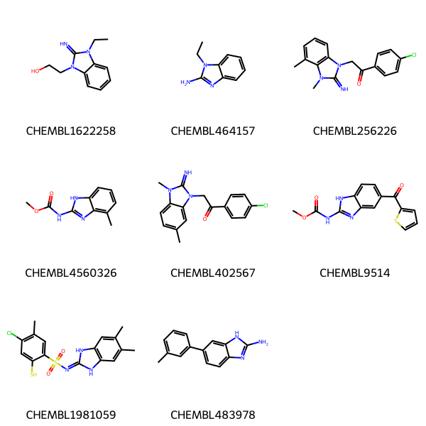
And a query which has both a variable attachment point and some possible tautomers.
qry = Chem.MolFromMolBlock('''
Mrv2211 10142305482D
0 0 0 0 0 999 V3000
M V30 BEGIN CTAB
M V30 COUNTS 12 12 0 0 0
M V30 BEGIN ATOM
M V30 1 C -4.7499 1.9567 0 0
M V30 2 C -6.0836 1.1867 0 0
M V30 3 C -6.0836 -0.3534 0 0
M V30 4 C -4.7499 -1.1234 0 0
M V30 5 C -3.4163 -0.3534 0 0
M V30 6 C -3.4163 1.1867 0 0
M V30 7 N -1.9692 1.7134 0 0
M V30 8 N -1.8822 -0.7768 0 0
M V30 9 C -1.0211 0.4999 0 0
M V30 10 * -5.639 -0.0967 0 0
M V30 11 C -5.639 -2.4067 0 0
M V30 12 N 0.518 0.5537 0 0
M V30 END ATOM
M V30 BEGIN BOND
M V30 1 1 1 2
M V30 2 2 2 3
M V30 3 1 3 4
M V30 4 2 4 5
M V30 5 1 5 6
M V30 6 2 1 6
M V30 7 1 8 9
M V30 8 1 7 6
M V30 9 1 5 8
M V30 10 2 7 9
M V30 11 1 10 11 ENDPTS=(2 4 3) ATTACH=ANY
M V30 12 1 9 12
M V30 END BOND
M V30 END CTAB
M END
''')
qry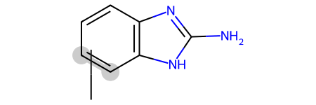
def filter_and_draw_with_highlights(mols,query_func):
keep = []
matches = []
for mol in mols:
match = query_func(mol)
if match:
keep.append(mol)
matches.append(match)
return Draw.MolsToGridImage(keep,highlightAtomLists=matches,subImgSize=(300,250))
filter_and_draw_with_highlights(mols,lambda x,q=qry: x.GetSubstructMatch(qry))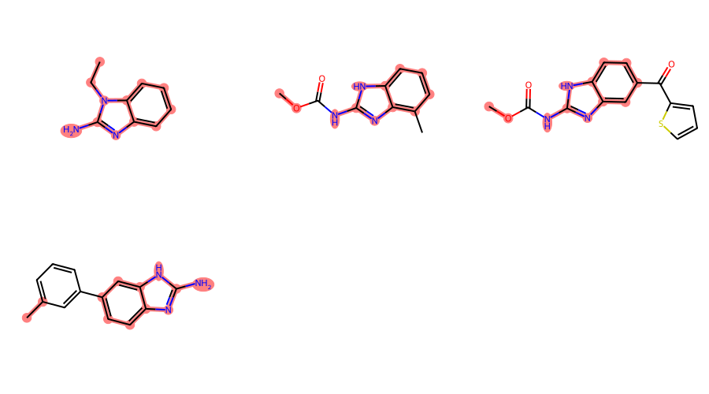
Some of those matches are surprising/ugly since the RDKit is just treating the variable attachment point as a carbon connected to a dummy atom which is not bound to the main scaffold, basically this:
In order to actually use the query feature, we need to create an extended query molecule and then use the generalized substructure search functionality:
filter_and_draw_with_highlights(mols,lambda x,q=xqm: rdGeneralizedSubstruct.MolGetSubstructMatch(x,q))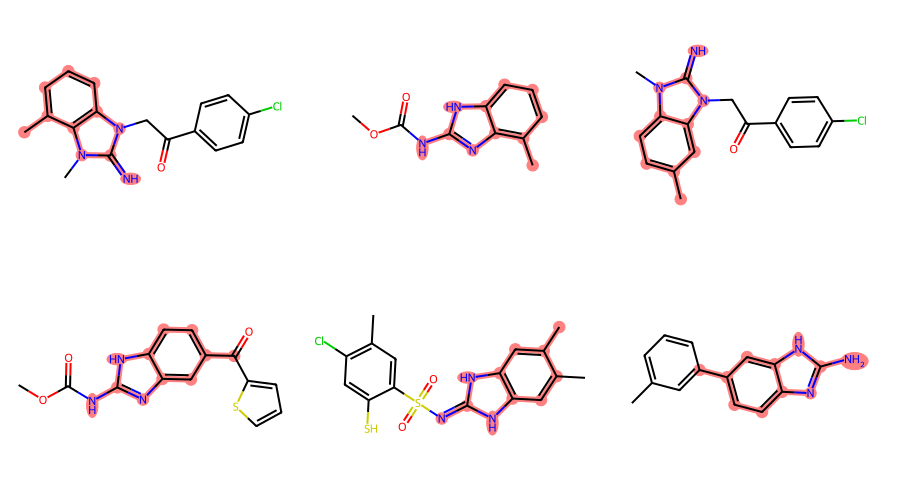
CreateExtendedQueryMol() can also call AdjustQueryProperties(). Here’s a demo of using that to only return matches where there are no additional ring substitutions:
ps = Chem.AdjustQueryParameters.NoAdjustments()
ps.adjustDegreeFlags = Chem.AdjustQueryWhichFlags.ADJUST_IGNORECHAINS
ps.adjustDegree = True
xqm = rdGeneralizedSubstruct.CreateExtendedQueryMol(qry,adjustQueryProperties=True,adjustQueryParameters=ps)
filter_and_draw_with_highlights(mols,lambda x,q=xqm: rdGeneralizedSubstruct.MolGetSubstructMatch(x,q))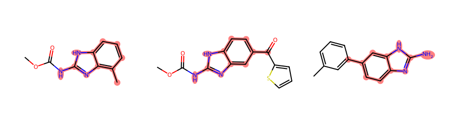
The generalized substructure functionality is also available in the cartridge as is the ability to search with “Beilstein” generic queries.
Start with a generic query:
By default query the generics are just used as dummy atoms, so the results we get from the query ignore the “ARY” groups:
d = %sql postgresql://localhost/chembl_31 \
select * from rdk.million_mols where m @>> mol_adjust_query_properties('O=C(-*)(-*) |$;;ARY_p;ARY_p$|'::mol, \
'{"adjustDegree": false, "makeDummiesQueries": true}')\
order by molregno asc limit 10;
ms = [Chem.MolFromSmiles(y) for x,y in d]
Draw.MolsToGridImage(ms,molsPerRow=4)10 rows affected.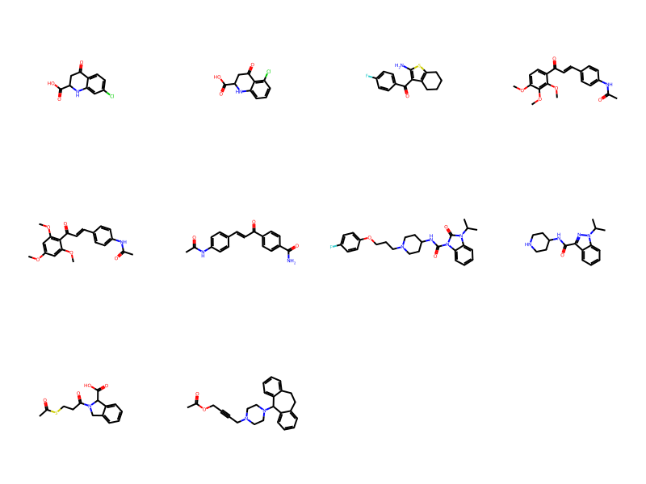
But by passing setGenericQueryFromProperties to mol_adjust_query_properties() we tell the cartridge to use the generics groups:
%sql postgresql://localhost/chembl_31 \
select 'CC(=O)C'::mol @>> mol_adjust_query_properties('O=C(-*)(-*) |$;;ARY_p;ARY_p$|'::mol, \
'{"setGenericQueryFromProperties": true, "adjustDegree": false}');1 rows affected.| ?column? |
|---|
| False |
d = %sql postgresql://localhost/chembl_31 \
select * from rdk.million_mols where m @>> mol_adjust_query_properties('O=C(-*)(-*) |$;;ARY_p;ARY_p$|'::mol, \
'{"setGenericQueryFromProperties": true, "adjustDegree": false, "makeDummiesQueries": true}')\
order by molregno asc limit 10;
ms = [Chem.MolFromSmiles(y) for x,y in d]
Draw.MolsToGridImage(ms,molsPerRow=4)10 rows affected.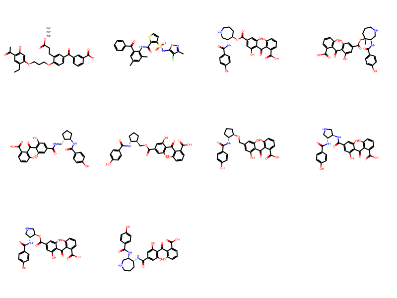
Now let’s look at using generalized substructure search by starting with a query molecule drawn as a tautomer which doesn’t exist in ChEMBL:
mb = '''
RDKit 2D
0 0 0 0 0 0 0 0 0 0999 V3000
M V30 BEGIN CTAB
M V30 COUNTS 7 7 1 0 0
M V30 BEGIN ATOM
M V30 1 C 1.208608 -2.457143 0.000000 0
M V30 2 C 2.445787 -1.742857 0.000000 0
M V30 3 C 2.445787 -0.314286 0.000000 0
M V30 4 N 1.208608 0.400000 0.000000 0
M V30 5 C -0.028571 -0.314286 0.000000 0
M V30 6 C -0.028571 -1.742857 0.000000 0
M V30 7 O -1.265751 0.400000 0.000000 0
M V30 END ATOM
M V30 BEGIN BOND
M V30 1 1 1 2
M V30 2 1 2 3
M V30 3 1 3 4
M V30 4 2 4 5
M V30 5 1 5 6
M V30 6 1 6 1
M V30 7 1 5 7
M V30 END BOND
M V30 BEGIN SGROUP
M V30 1 DAT 0 ATOMS=(1 7) FIELDDISP=" 0.0000 0.0000 DR ALL 0 0" -
M V30 QUERYTYPE=SMARTSQ QUERYOP== FIELDDATA="[#8&X1]"
M V30 END SGROUP
M V30 END CTAB
M END
$$$$
'''
m = Chem.MolFromMolBlock(mb)
m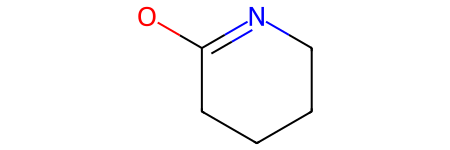
This doesn’t return any results:
d = %sql postgresql://localhost/chembl_31 \
select * from rdk.million_mols where m @> mol_from_ctab(:mb)\
order by molregno asc limit 10;
if not len(d):
raise ValueError('no matches!')
ms = [Chem.MolFromSmiles(y) for x,y in d]
Draw.MolsToGridImage(ms,molsPerRow=4)0 rows affected.ValueError: no matches!But we can enable generalized substructure search by calling mol_to_xqmol() (this creates an extended query molecule, discussed above) and using that for the substructure search:
d = %sql postgresql://localhost/chembl_31 \
select * from rdk.million_mols where m @> mol_to_xqmol(mol_from_ctab(:mb))\
order by molregno asc limit 10;
ms = [Chem.MolFromSmiles(y) for x,y in d]
Draw.MolsToGridImage(ms,molsPerRow=4)10 rows affected.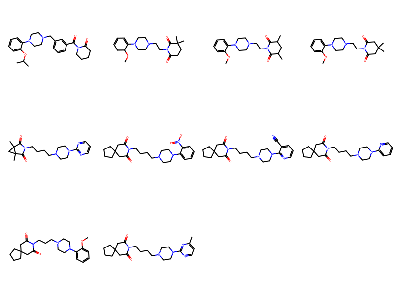
Here’s a demo that this works with link nodes and tautomers:
d = %sql postgresql://localhost/chembl_31 \
select * from rdk.million_mols where m @> mol_to_xqmol('OCc1nc2cccnc2[nH]1 |LN:1:2.3|')\
limit 10;
ms = [Chem.MolFromSmiles(y) for x,y in d]
Draw.MolsToGridImage(ms,molsPerRow=4)6 rows affected.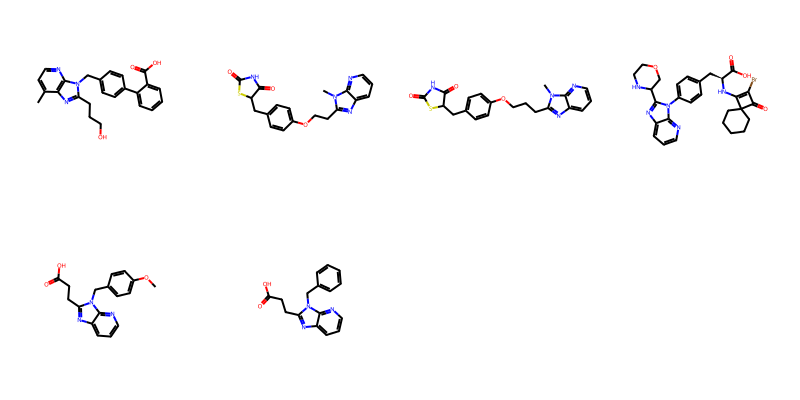
And, as a final demo, link nodes, variable attachment points, and tautomers:
mb = '''qry
Mrv2305 09052314502D
0 0 0 0 0 999 V3000
M V30 BEGIN CTAB
M V30 COUNTS 13 13 0 0 0
M V30 BEGIN ATOM
M V30 1 N -4.75 1.9567 0 0
M V30 2 C -6.0837 1.1867 0 0
M V30 3 C -6.0837 -0.3534 0 0
M V30 4 C -4.75 -1.1234 0 0
M V30 5 C -3.4163 -0.3534 0 0
M V30 6 C -3.4163 1.1867 0 0
M V30 7 N -1.9692 1.7134 0 0
M V30 8 N -1.8822 -0.7768 0 0
M V30 9 C -1.0211 0.4999 0 0
M V30 10 C 0.5179 0.5536 0 0
M V30 11 N 1.2409 1.9133 0 0
M V30 12 * -5.6391 -0.0967 0 0
M V30 13 C -5.6391 -2.4067 0 0
M V30 END ATOM
M V30 BEGIN BOND
M V30 1 1 1 2
M V30 2 2 2 3
M V30 3 1 3 4
M V30 4 2 4 5
M V30 5 1 5 6
M V30 6 2 1 6
M V30 7 1 8 9
M V30 8 1 7 6
M V30 9 1 5 8
M V30 10 2 7 9
M V30 11 1 9 10
M V30 12 1 10 11
M V30 13 1 12 13 ENDPTS=(3 4 3 2) ATTACH=ANY
M V30 END BOND
M V30 LINKNODE 1 2 2 10 9 10 11
M V30 END CTAB
M END'''
Chem.MolFromMolBlock(mb)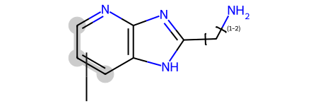